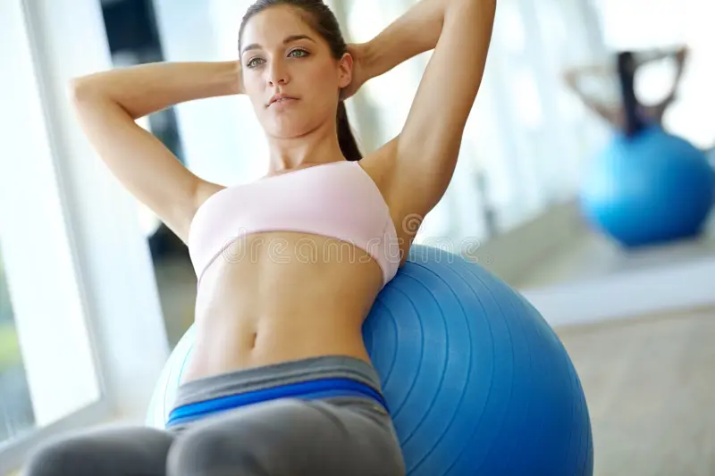
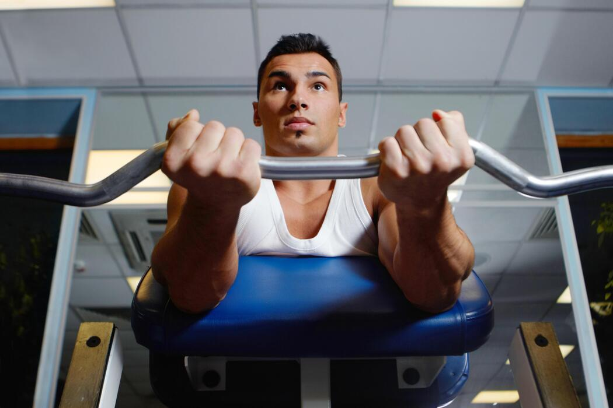

O melhor lugar para melhorar a sua saúde
Sobre nós | Pilates | Musculação/Funcional
Venha fazer parte da nossa família, Cadastre-se já!
Você quer começar a treinar, mas não sabe por onde? Você acha que precisa estar "realmente pronto" pra começar? Talvez não seja somente sobre ter confiança; talvez seja só sobre encontrar o lugar certo! Chegou a hora de sair da rotina, superar limites e investir em quem mais importa: você. Aqui na Athletica Fit, cada treino é uma oportunidade de evolução, cada desafio é um passo em direção aos seus objetivos e cada conquista mostra que você é capaz de ir muito além do que imagina. Aqui é o lugar ideal pra você. Na Athletica Fit você não treina sozinho; cada aluno é acompanhado de perto por profissionais, com orientação de verdade e um ambiente que acolhe, não julga.
Aqui não importa seu nível, não importa se você está começando agora ou se já faz parte do mundo fitness, não importa sua idade ou seu objetivo: o importante é dar o primeiro passo, e você não precisa dar ele sozinho! Na nossa academia temos tudo o que precisa: Treino funcional, aulas de zumba, aulas de pilates, alongamento e muitas outras atividades pensadas para diferntes gostos e momentos, até porque no final, não é só sobre treinar: é sobre se redescobrir e se encaixar em algo que faz sentido pra você!
E é justamente por isso que tantas pessoas escolhem a Athletica Fit todos os dias: porque aqui cada conquista é valorizada, cada esforço é reconhecido e cada aluno encontra motivação para continuar evoluindo. Nosso objetivo não é apenas ajudar você a alcançar resultados físicos, mas também fazer com que se sinta mais forte, mais saudável, mais confiante e mais feliz consigo mesmo.
Mais do que uma academia, queremos ser parte da sua transformação. Um lugar onde você se sente motivado a voltar, onde cria hábitos melhores, conhece pessoas, descobre novas capacidades e percebe que cuidar de si mesmo pode ser algo leve, prazeroso e inspirador.
Então não espere o “momento perfeito” para começar, porque ele pode nunca chegar. O melhor momento é agora.
Venha conhecer a Athletica Fit e descubra que a sua melhor versão já existe — ela só está esperando você dar o primeiro passo.
Nós oferecemos:
Preciso ter experiência pra começar?
Não! Nossos profissionais acompanham alunos de todos os níveis.
Existe idade mínima pra se matricular?
Sim. Aqui na Athletica Fit, trabalhamos com alunos a partir de 10 anos.
E idade máxima?
Não! Na Athletica Fit acreditamos que nunca é tarde para cuidar da saúde e da qualidade de vida.
Os exercícios são adaptados às necessidades e limitações de cada aluno.
Posso fazer mais de uma modalidade?
Sim! Você pode combinar musculação, funcional e pilates.
| Horários de funcionamento |
||
|---|---|---|
| Domingo | Não abre! | |
| Segunda-Feira | 05:30 às 12:00 / 14:00 às 22:00 | |
| Terça-Feira | ||
| Quarta-Feira | ||
| Quinta-Feira | ||
| Sexta-Feira | ||
| Sábado | 10:00 às 13:00 | |

Movimento, equilíbrio e bem-estar em cada aula.
O Pilates é muito mais do que uma atividade física: é uma prática que fortalece o corpo, melhora a postura, aumenta a flexibilidade e promove uma maior consciência corporal. Na Athletica Fit, oferecemos aulas pensadas para quem busca qualidade de vida, saúde e um momento para cuidar de si mesmo.
Com acompanhamento profissional e exercícios adaptados às necessidades de cada aluno, nossas aulas ajudam a desenvolver força, estabilidade, coordenação e mobilidade de forma segura e eficiente. Além dos benefícios físicos, o Pilates também contribui para a redução do estresse, melhora da respiração e aumento da sensação de bem-estar.
Não importa sua idade, nível de condicionamento físico ou experiência com a modalidade. O Pilates é indicado para iniciantes, praticantes experientes, pessoas em processo de reabilitação ou simplesmente para quem deseja se movimentar com mais qualidade e conforto no dia a dia.
Na Athletica Fit, você encontra um ambiente acolhedor, profissionais capacitados e toda a atenção necessária para evoluir no seu próprio ritmo. Aqui, cada aula é uma oportunidade de fortalecer o corpo, cuidar da mente e conquistar mais disposição para viver melhor.
Venha conhecer nossas aulas de Pilates e descubra como pequenos movimentos podem transformar sua saúde e seu bem-estar.

Na Athletica Fit, a musculação e o treino funcional vão muito além de levantar pesos ou seguir exercícios repetitivos. Cada movimento é pensado para fortalecer o corpo, melhorar o desempenho físico e promover uma transformação que você sente de dentro para fora. Com treinos planejados por profissionais capacitados, cada aluno é guiado de forma segura e eficiente, respeitando seu ritmo e potencial.
Seja para ganhar força, definir músculos, melhorar o condicionamento ou simplesmente se sentir mais disposto no dia a dia, aqui você encontra tudo o que precisa. Nosso espaço oferece equipamentos de última geração, áreas específicas para funcional e treinos variados que desafiam o corpo de forma inteligente, tornando cada sessão motivadora e recompensadora.
Além dos benefícios físicos, a musculação e o treino funcional ajudam a melhorar a postura, aumentar a resistência, prevenir lesões e elevar a confiança em si mesmo. Cada conquista no treino é um passo a mais na sua evolução, e cada desafio superado mostra que você é capaz de ir muito além do que imagina.
Não importa seu nível de experiência: iniciantes, intermediários ou avançados encontram na Athletica Fit um ambiente acolhedor, orientação personalizada e toda a motivação necessária para atingir seus objetivos. Aqui, cada treino é uma oportunidade de se redescobrir, superar limites e investir em quem mais importa: você.
Venha conhecer nossa área de musculação e treinos funcionais. Descubra que sua força vai muito além dos músculos — ela está em cada passo que você dá rumo à sua melhor versão.
Athletica Fit